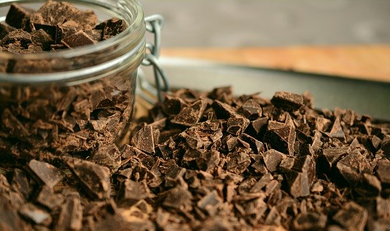
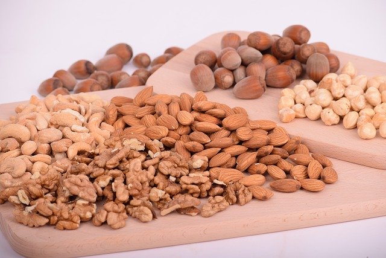

What Can Be Added to a Banana Bread?

Perhaps you'd like to create a twist on such a simple recipe.
Here's what you can add to a banana bread to give it some extra flavor!
Nuts!
Pecans can be added for a bit of sweetness.
Add almonds for that savory taste.
And for a classic combination: try adding walnuts.
Sour Cream! Sour cream or Greek yogurt add a bit of a tart taste.
Dried fruits! Feel free to add raisins, dried cranberries,
apricots, or dates for a fun twist.
Chocolate chips! Whenever I make banana bread, I
always add chocolate chips. It's the best way to have it!
Trail Mix! Can't make up your mind on what you want to add in?
Just throw everything in!
Maple Syrup! Adding maple syrup really helps
banana bread feel like the perfect breakfast snack.
Nutella! Try swirling nutella into the mix from the start.
Caramel! Want your banana bread to feel more like a dessert?
Try infusing it with caramel and adding a brown sugar glaze on top.
